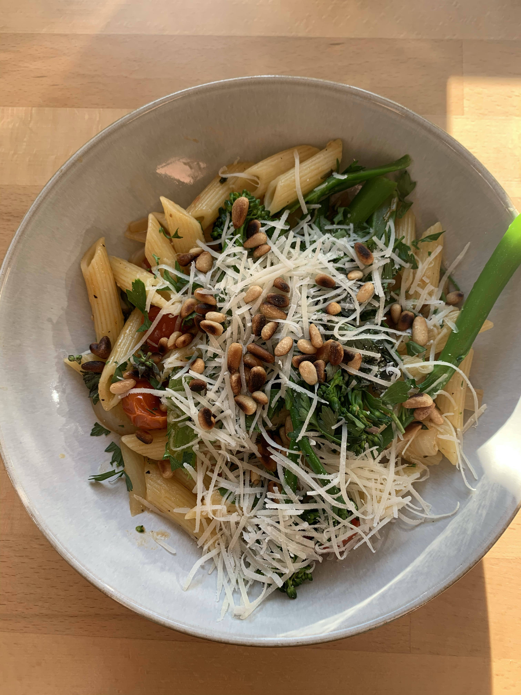

Pine Nut, Broccolini and Sardine Pasta
A gorgeous summer supper.

Ingredients
- 4 tbsp extra virgin olive oil, plus a splash
- 500g spaghetti
- 500g broccolini
- 2 red onions, diced
- 4 garlic cloves, thinly sliced
- 50g sardines in oil
- 25g pine nuts
- Juice and zest of 1/2 a lemon
- Chilli flakes
Method
- Bring a large pan of water to the boil, with a splash of oil, then add the pasta. Cook following pack instructions, adding the broccolini for the final 5 mins.
- Meanwhile, gently heat the oil in a large pan. Add the onions and sliced garlic, and cook slowly for 2 mins.
- Flake the sardines into the pan and stir around for a few more mins to break them up.
- Tip the pasta and broccolini into the pan with the pine nuts and lemon juice. Toss together to let the pasta absorb the oil, season well and serve immediately, scattered with lemon zest and chilli flakes.
Contact Me
Email: sophieee.price@gmail.com
Mobile: 07513070268